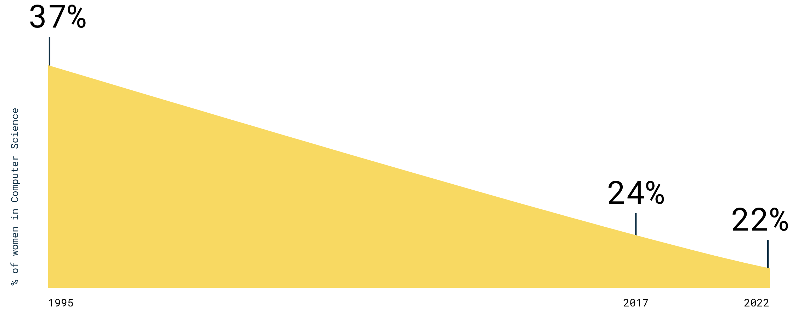

Hello World: An Intro to Computer Science
Type:
Book in the making
Timeframe:
Sept - TBD 2020
Reasons why I am writing this book:
Top CS books for young adults are mainly geared towards a
male audience
Share my knowledge of basic Computer Science concepts from a
female college student
perspective
A way to
encourage and support
young girls who want to get involved in tech
According to
Girls Who Code
, in 1995,
37%
of computer scientists were women. Today, it’s only
24%
.
